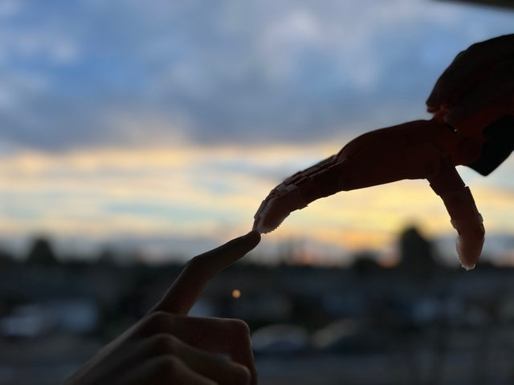
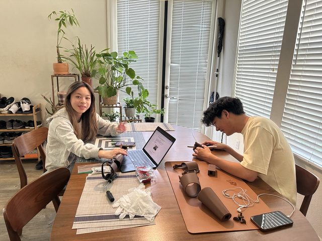
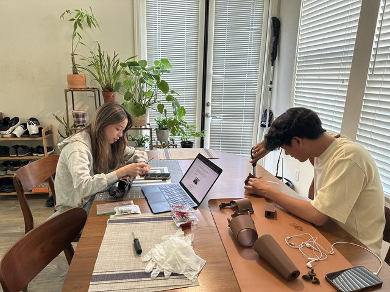
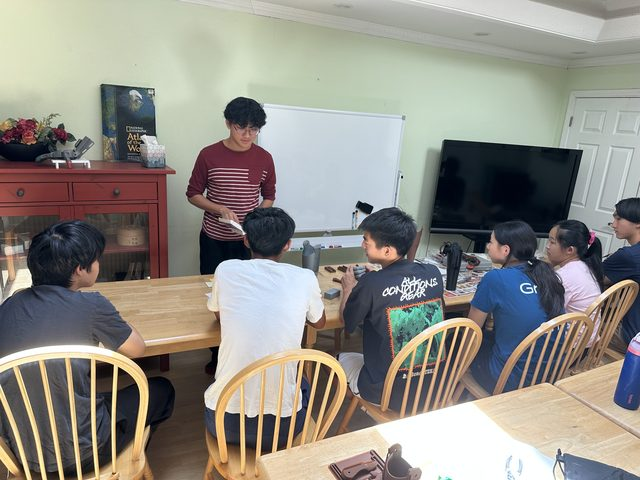
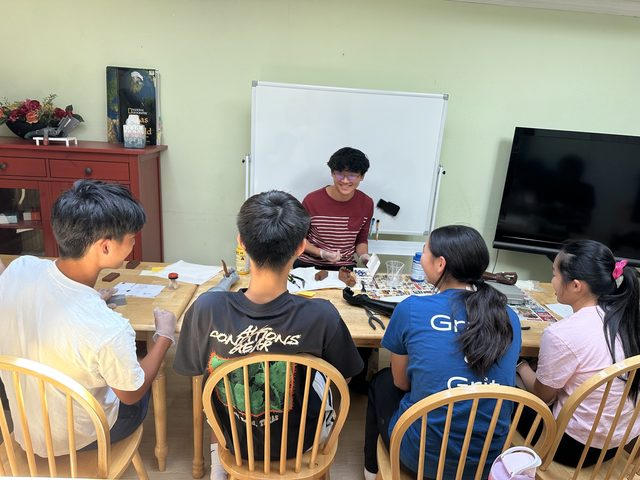
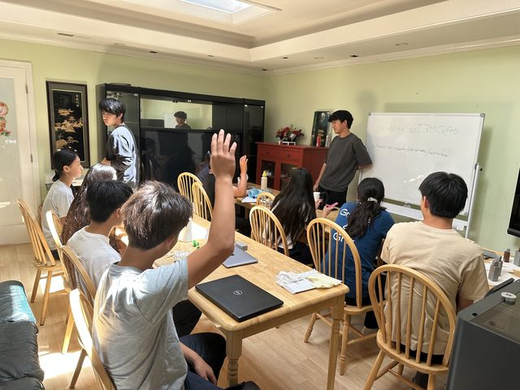

Big Hands e-NABLE Fremont
Founder & President · Dec 2025 – present
I founded a chapter of the global e-NABLE network that designs and 3D prints free prostheses for the limb-different community.
TODO: pick the good images out of originals/slides-media/ and move them into this project's img folder.






Outcome
Coordinated with the World Action Fund to donate 15 custom prostheses to recipients in the West Bank and Uganda, with 40+ Ugandan cases in development. Raised over $4,000 through community events, sports tournaments, and local donor outreach. Mentored the Big Hands Next-Gen team to 30+ members, teaching CAD and 3D printing.
Why
A clinically prescribed prosthetic can run past $20,000. e-NABLE's open-source designs and a printer get a working device to a kid for the cost of filament — the bottleneck is volunteers who can actually design, fit, and ship them.
My role
Founded and lead the chapter: technical, finance, and social media teams; recipient intake; measurement and fitting; device validation; donor outreach.
How it works
Led development and dissemination of amputation-specific finger prosthetics, transhumeral prosthetics, and cosmetic covers for the wider e-NABLE community. Works with the United e-NABLE Coalition on Uganda cases and partners with the World Action Fund for delivery.